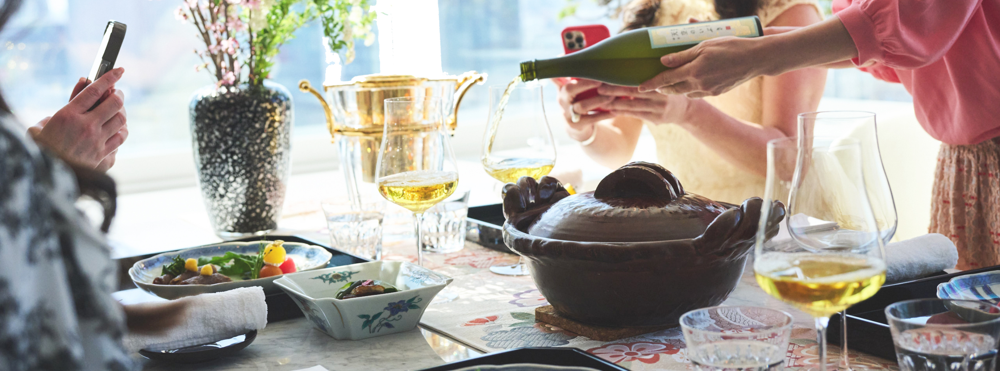
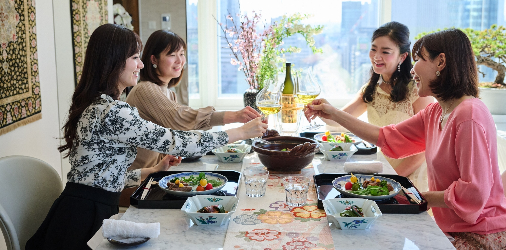
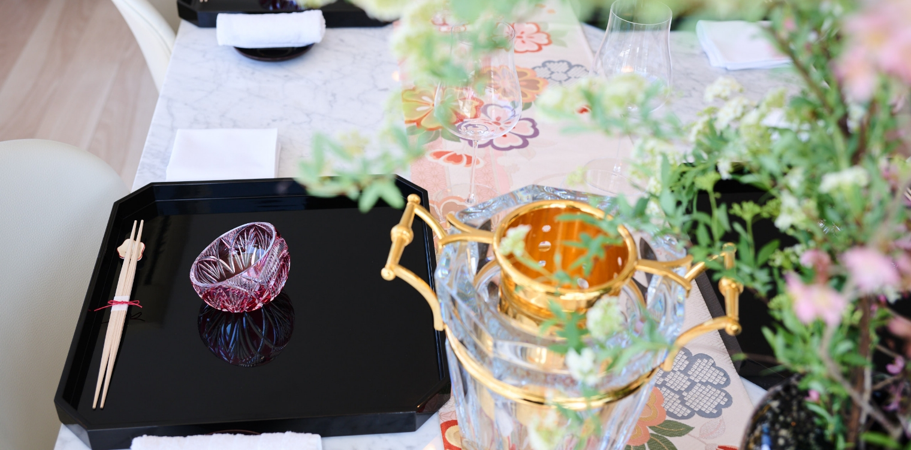

料理研究家の内田みち代さんがおもてなし
料理家、インフルエンサーを招いた
「日本の極み」を使ったホームパーティー
- 内田みち代
- 松野エリカ
- 壁谷玲子
- 酒匂ひろ子
2024.3.14
2024年3月14日、東京、六本木。美食のインフルエンサーであり「入会希望が絶えない料理教室」を主催される内田みち代さんに、「日本の極み」を使ったホームパーティーを開催していただきました。
参加者はアーティストの壁谷玲子さん、料理家の松野エリカさん、酒匂ひろ子さん。華やかな美食の世界で活躍するインフルエンサーたちは「日本の極み」を、どう評価してくださるのでしょうか。

参加いただいたのは
美食の世界のインフルエンサーたち
-
HOST
内田みち代 さん
料理研究家＆ミセスモデル
会員制にも関わらず入会希望が絶えない料理教室「六本木MICHIYO倶楽部」を23年間主宰。食のプロや著名人にもファンが多く、「料理王国」のアンバサダーも務めます。
-
GUEST
松野エリカ さん
美容料理家
食べてキレイを叶えるビューティークッキングサロンERICHE南青山オーナー。
女性限定サロンでは主にグルテンフリースイーツレッスンを開催。今日に至るまで受講生は5,000名を超える。 -
GUEST
壁谷玲子 さん
フランスコメルシー公認マドレーヌ大使 / Princesse Reico（マドレーヌ専門ブランド）展開 / お菓子教室主催
自身のブランド「PricesseReico」を国内有名百貨店やパリにて出展。メニュー開発、企業コンサル。パリ５つ星ホテル、３つ星レストラン、MOFシェフの元スタージュを重ねLesFraisesお菓子教室も主宰し、人気。現在オンラインレッスンのみ開催。
-
GUEST
酒匂ひろ子 さん
料理家/スイーツクリエイター
カジュアルに楽しむおうちサロンHIROKO'S KITCHENオーナー。オリジナルアイシングクッキーやアニバーサリーケーキは口コミで広がりリピーターも多数。「料理王国」のオフィシャル料理家としても活躍中。

春らしいテーブルセッティングで、いよいよパーティーがスタートです！